#load needed packages
library(here) #calling
library(dplyr) #cleaning
library(skimr)
library(ggplot2) #plotting and visualization
library(ggpubr) #ggscatter to visualize correlations
library(naniar)#missing values graphics and plots
library(UpSetR)#missing values graphics and plots
library(corrplot) #evaluate if covariates are correlated
library(writexl)
library(reshape2)
library(tidyverse)
library(tidyr)
library(knitr)
library(nortest)White Stork Antimicrobial Resistance
Exploratory Analysis
This QMD file contains exploratory analysis for antimicrobial resistance data collected from White Stork (Ciconia ciconia) in Madrid, Spain.
Load Data/Packages
#load all data
stork_AMR_clean <- readRDS(here::here("2 Clean Data","stork_AMR_clean.rds"))
# Subset the dataset for the year 2021
stork_AMR_2021 <- stork_AMR_clean %>%
filter(yr == 2021)
stork_AMR_2020 <- stork_AMR_clean %>%
filter(yr == 2020)Quality Control
stork_AMR_clean %>%
as_shadow_upset() %>%
upset()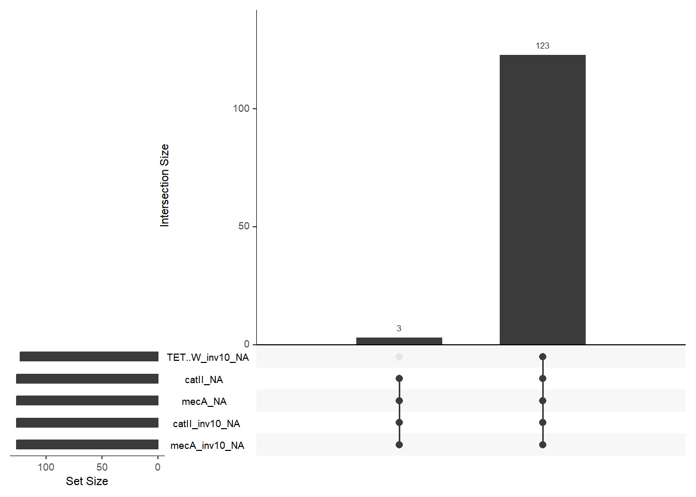
gg_miss_fct(x = stork_AMR_clean, fct = yr)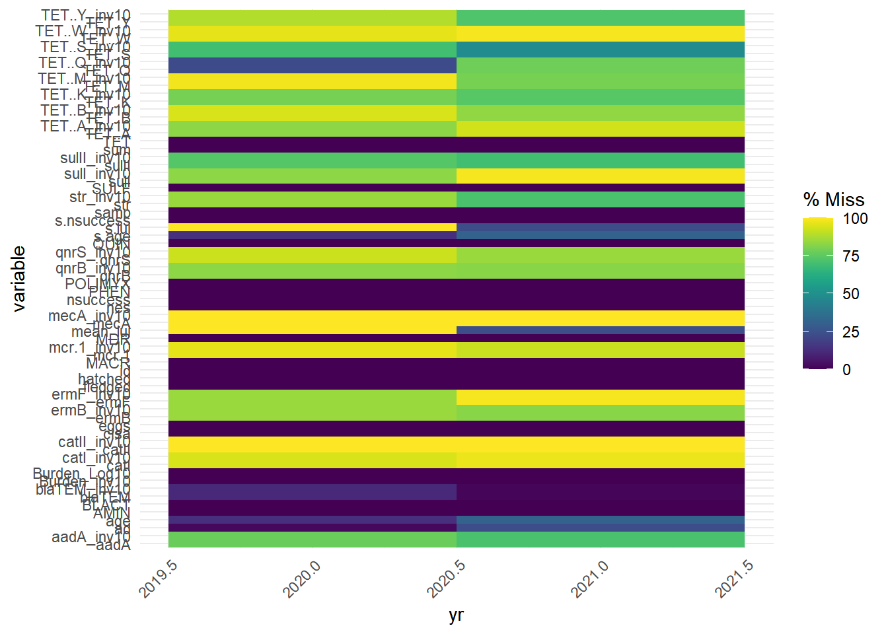
gg_miss_fct(x = stork_AMR_clean, fct = samp)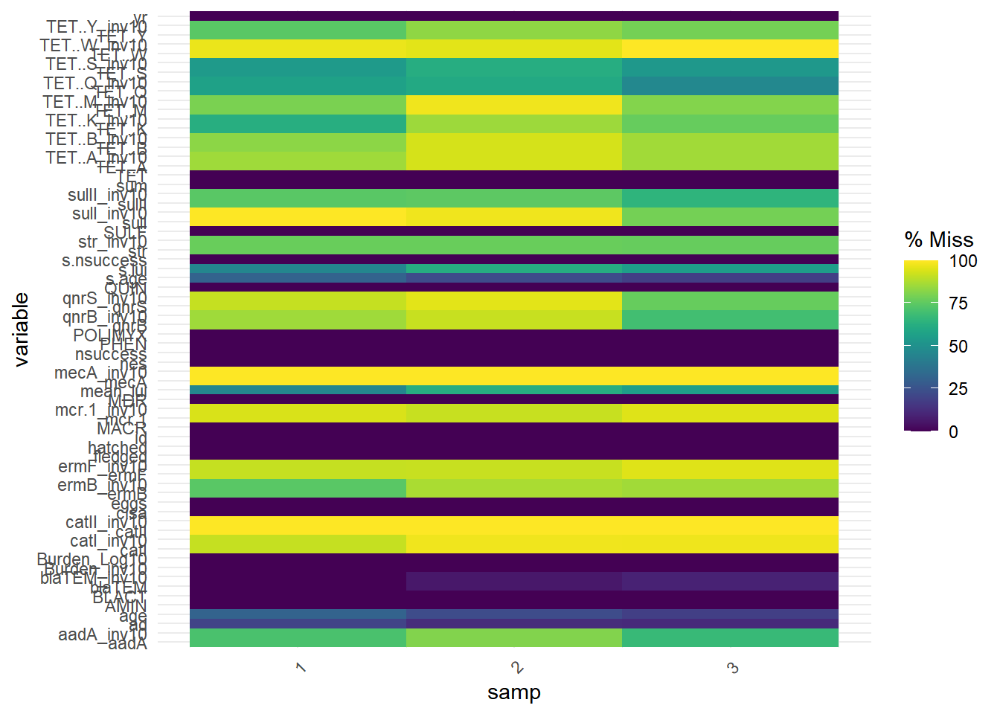
Quite alot of missing values for 2020. Will likely only be able to do summary stats on 2020 because no LUI data was collected that year (COVID-19 limitations)
Data subset for 2021
stork_AMR_2021 %>%
as_shadow_upset() %>%
upset()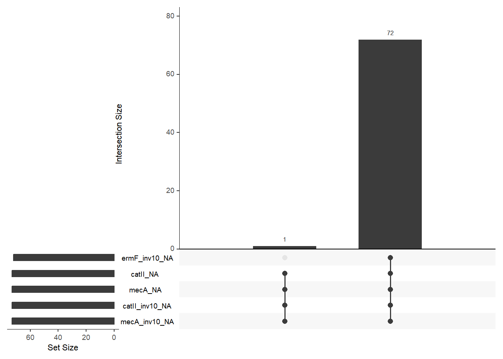
gg_miss_fct(x = stork_AMR_2021, fct = yr)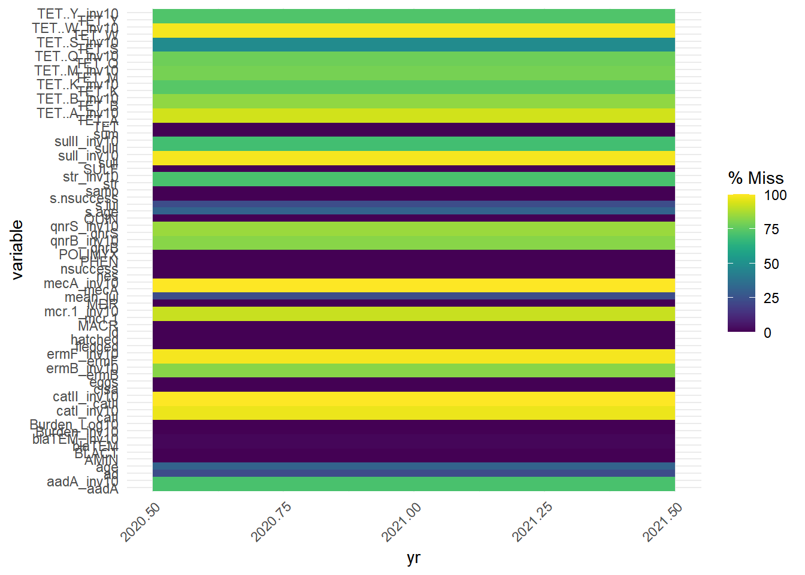
gg_miss_fct(x = stork_AMR_2021, fct = samp)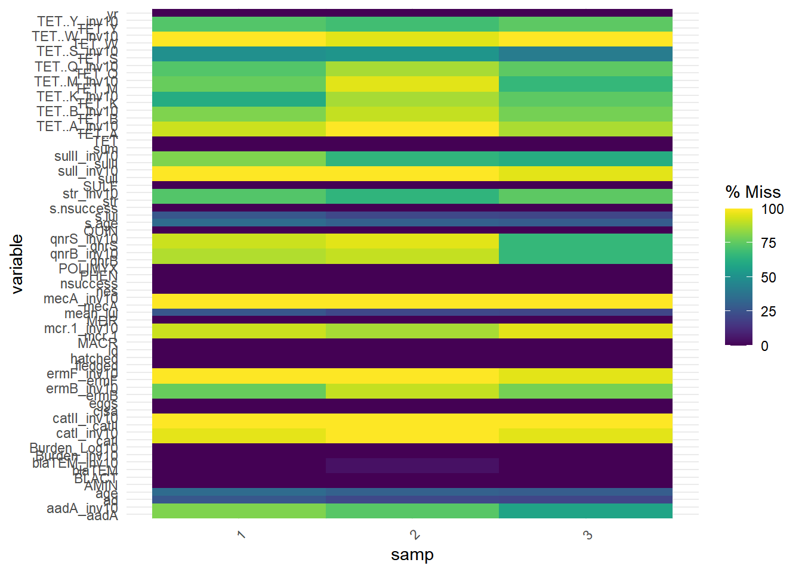
Correlation Check of Covariates
#define the variables we want to include in the correlation matrix
variables <- stork_AMR_clean[ , c("s.age", "s.lui", "samp", "s.nsuccess")]
#create correlation matrix
cor(variables, use = "complete.obs") #ignore NAs s.age s.lui samp s.nsuccess
s.age 1.000000000 0.004929289 -0.04479929 -0.15808036
s.lui 0.004929289 1.000000000 0.08487804 -0.05277091
samp -0.044799287 0.084878037 1.00000000 0.11486562
s.nsuccess -0.158080362 -0.052770910 0.11486562 1.00000000CorrPlot <- corrplot(cor(variables, use = "complete.obs"))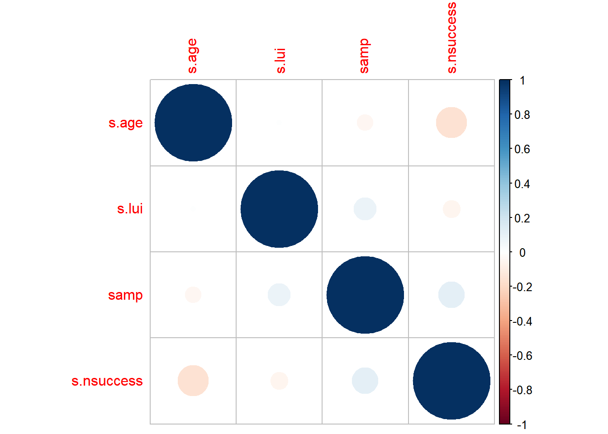
CorrPlot$corr
s.age s.lui samp s.nsuccess
s.age 1.000000000 0.004929289 -0.04479929 -0.15808036
s.lui 0.004929289 1.000000000 0.08487804 -0.05277091
samp -0.044799287 0.084878037 1.00000000 0.11486562
s.nsuccess -0.158080362 -0.052770910 0.11486562 1.00000000
$corrPos
xName yName x y corr
1 s.age s.age 1 4 1.000000000
2 s.age s.lui 1 3 0.004929289
3 s.age samp 1 2 -0.044799287
4 s.age s.nsuccess 1 1 -0.158080362
5 s.lui s.age 2 4 0.004929289
6 s.lui s.lui 2 3 1.000000000
7 s.lui samp 2 2 0.084878037
8 s.lui s.nsuccess 2 1 -0.052770910
9 samp s.age 3 4 -0.044799287
10 samp s.lui 3 3 0.084878037
11 samp samp 3 2 1.000000000
12 samp s.nsuccess 3 1 0.114865624
13 s.nsuccess s.age 4 4 -0.158080362
14 s.nsuccess s.lui 4 3 -0.052770910
15 s.nsuccess samp 4 2 0.114865624
16 s.nsuccess s.nsuccess 4 1 1.000000000
$arg
$arg$type
[1] "full"Z <- data.frame(s.age = stork_AMR_clean$s.age,
s.lui = stork_AMR_clean$s.lui,
s.nsuccess = stork_AMR_clean$s.nsuccess,
samp = stork_AMR_clean$samp)
pairs(Z, panel = panel.smooth, labels = c("age", "mean_lui", "nsuccess", "samp"))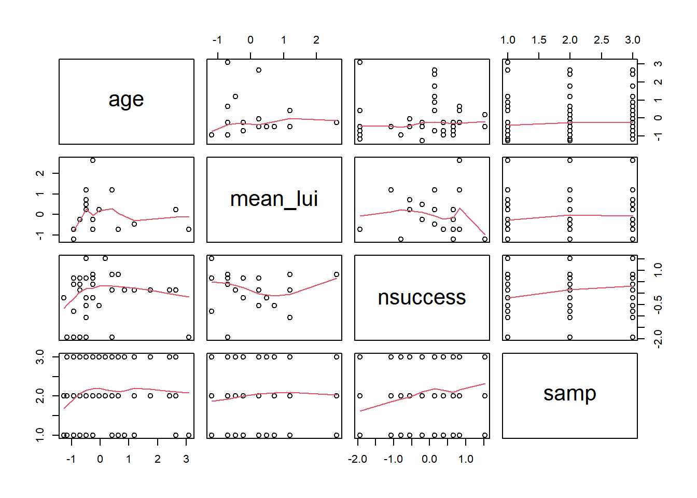
#More than 0.7 usually is unacceptable
#More than 0.5 you need to be careful; NOTHING over 0.5
##BASIC SPEARMAN
cor.test( stork_AMR_clean$s.age, stork_AMR_clean$s.lui,
method = "spearman")Warning in cor.test.default(stork_AMR_clean$s.age, stork_AMR_clean$s.lui, :
Cannot compute exact p-value with ties
Spearman's rank correlation rho
data: stork_AMR_clean$s.age and stork_AMR_clean$s.lui
S = 18159, p-value = 0.3756
alternative hypothesis: true rho is not equal to 0
sample estimates:
rho
0.1280313 cor.test( stork_AMR_clean$s.age, stork_AMR_clean$s.nsuccess,
method = "spearman")Warning in cor.test.default(stork_AMR_clean$s.age, stork_AMR_clean$s.nsuccess,
: Cannot compute exact p-value with ties
Spearman's rank correlation rho
data: stork_AMR_clean$s.age and stork_AMR_clean$s.nsuccess
S = 137852, p-value = 0.529
alternative hypothesis: true rho is not equal to 0
sample estimates:
rho
0.06502986 cor.test( stork_AMR_clean$s.age, stork_AMR_clean$samp,
method = "spearman")Warning in cor.test.default(stork_AMR_clean$s.age, stork_AMR_clean$samp, :
Cannot compute exact p-value with ties
Spearman's rank correlation rho
data: stork_AMR_clean$s.age and stork_AMR_clean$samp
S = 137184, p-value = 0.5007
alternative hypothesis: true rho is not equal to 0
sample estimates:
rho
0.06956177 cor.test( stork_AMR_clean$s.nsuccess, stork_AMR_clean$s.lui,
method = "spearman")Warning in cor.test.default(stork_AMR_clean$s.nsuccess, stork_AMR_clean$s.lui,
: Cannot compute exact p-value with ties
Spearman's rank correlation rho
data: stork_AMR_clean$s.nsuccess and stork_AMR_clean$s.lui
S = 33676, p-value = 0.2668
alternative hypothesis: true rho is not equal to 0
sample estimates:
rho
-0.1509358 cor.test( stork_AMR_clean$s.nsuccess, stork_AMR_clean$samp,
method = "spearman")Warning in cor.test.default(stork_AMR_clean$s.nsuccess, stork_AMR_clean$samp, :
Cannot compute exact p-value with ties
Spearman's rank correlation rho
data: stork_AMR_clean$s.nsuccess and stork_AMR_clean$samp
S = 265606, p-value = 0.02243
alternative hypothesis: true rho is not equal to 0
sample estimates:
rho
0.2032829 cor.test( stork_AMR_clean$s.lui, stork_AMR_clean$samp,
method = "spearman")Warning in cor.test.default(stork_AMR_clean$s.lui, stork_AMR_clean$samp, :
Cannot compute exact p-value with ties
Spearman's rank correlation rho
data: stork_AMR_clean$s.lui and stork_AMR_clean$samp
S = 26675, p-value = 0.5173
alternative hypothesis: true rho is not equal to 0
sample estimates:
rho
0.0883528 cor.test( stork_AMR_clean$Burden_inv10, stork_AMR_clean$MDR,
method = "spearman")Warning in cor.test.default(stork_AMR_clean$Burden_inv10, stork_AMR_clean$MDR,
: Cannot compute exact p-value with ties
Spearman's rank correlation rho
data: stork_AMR_clean$Burden_inv10 and stork_AMR_clean$MDR
S = 395132, p-value = 0.03783
alternative hypothesis: true rho is not equal to 0
sample estimates:
rho
-0.1852482 cor.test( stork_AMR_clean$Burden_Log10, stork_AMR_clean$MDR,
method = "spearman")Warning in cor.test.default(stork_AMR_clean$Burden_Log10, stork_AMR_clean$MDR,
: Cannot compute exact p-value with ties
Spearman's rank correlation rho
data: stork_AMR_clean$Burden_Log10 and stork_AMR_clean$MDR
S = 496590, p-value = 5.965e-09
alternative hypothesis: true rho is not equal to 0
sample estimates:
rho
-0.4895827 cor.test( stork_AMR_clean$sum, stork_AMR_clean$MDR,
method = "spearman") #Correlated!Warning in cor.test.default(stork_AMR_clean$sum, stork_AMR_clean$MDR, method =
"spearman"): Cannot compute exact p-value with ties
Spearman's rank correlation rho
data: stork_AMR_clean$sum and stork_AMR_clean$MDR
S = 35629, p-value < 2.2e-16
alternative hypothesis: true rho is not equal to 0
sample estimates:
rho
0.8931265 ##Visual Plots with: regression line and confidence interval
#Age + LUI
ggscatter(stork_AMR_clean, x = 'age', y = 's.lui',
add = "reg.line", conf.int = TRUE,
add.params = list(fill = "lightgray"),
ggtheme = theme_minimal()
)+
stat_cor(method = "spearman", p.accuracy = 0.001, r.accuracy = 0.01,
label.y = 0.5) Warning: Removed 76 rows containing non-finite outside the scale range
(`stat_smooth()`).Warning: Removed 76 rows containing non-finite outside the scale range
(`stat_cor()`).Warning: Removed 76 rows containing missing values or values outside the scale range
(`geom_point()`).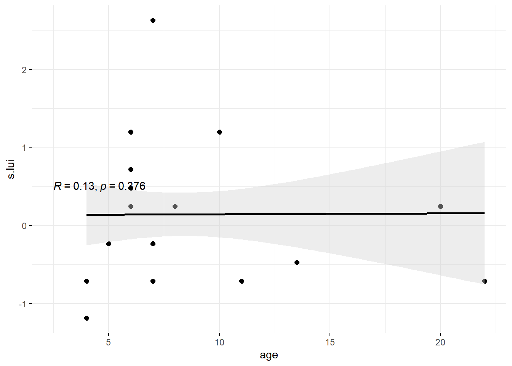
#Nsuccess + LUI
ggscatter(stork_AMR_clean, x = 's.nsuccess', y = 's.lui',
add = "reg.line", conf.int = TRUE,
add.params = list(fill = "lightgray"),
ggtheme = theme_minimal()
)+
stat_cor(method = "spearman", p.accuracy = 0.001, r.accuracy = 0.01,
label.y = 0.6)Warning: Removed 70 rows containing non-finite outside the scale range
(`stat_smooth()`).Warning: Removed 70 rows containing non-finite outside the scale range
(`stat_cor()`).Warning: Removed 70 rows containing missing values or values outside the scale range
(`geom_point()`).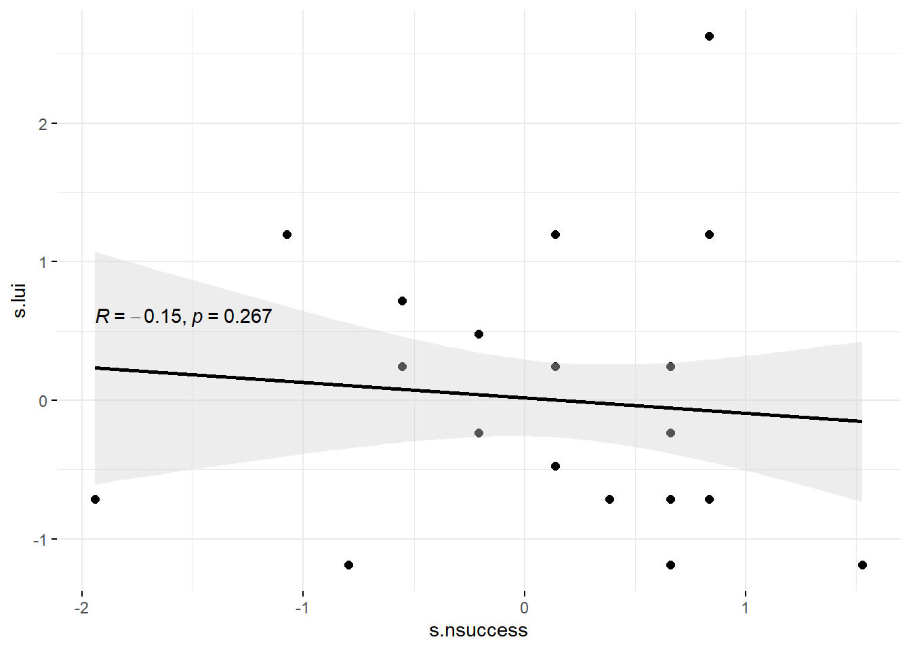
#Nsuccess + Age
ggscatter(stork_AMR_clean, x = 's.nsuccess', y = 'age',
add = "reg.line", conf.int = TRUE,
add.params = list(fill = "lightgray"),
ggtheme = theme_minimal()
)+
stat_cor(method = "spearman", p.accuracy = 0.001, r.accuracy = 0.01,
label.y = 20)Warning: Removed 30 rows containing non-finite outside the scale range
(`stat_smooth()`).Warning: Removed 30 rows containing non-finite outside the scale range
(`stat_cor()`).Warning: Removed 30 rows containing missing values or values outside the scale range
(`geom_point()`).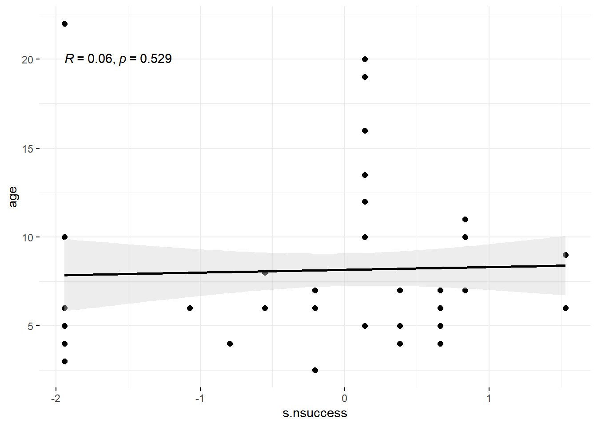
#Variables of interest not correlated; they are independent = Move on to analysisData Exploration and visualization
Will explore both 2020 and 2021 data, but will not model with 2020 as no LUI data was collected this year due to COVID-19 resrictions.
Quick Sample summary stats
# Total number of samples
total_samples <- nrow(stork_AMR_clean)
cat("Total number of samples:", total_samples, "\n")Total number of samples: 126 # Number of samples in each year
samples_per_year <- stork_AMR_clean %>%
group_by(yr) %>%
summarise(count = n())
cat("Samples per year:\n")Samples per year:print(samples_per_year)# A tibble: 2 × 2
yr count
<dbl> <int>
1 2020 53
2 2021 73# Breakdown of samples by year and sampling period (samp)
samples_by_year_and_samp <- stork_AMR_clean %>%
group_by(yr, samp) %>%
summarise(count = n())`summarise()` has grouped output by 'yr'. You can override using the `.groups`
argument.cat("Samples by year and sampling period:\n")Samples by year and sampling period:print(samples_by_year_and_samp)# A tibble: 6 × 3
# Groups: yr [2]
yr samp count
<dbl> <dbl> <int>
1 2020 1 9
2 2020 2 25
3 2020 3 19
4 2021 1 26
5 2021 2 23
6 2021 3 24Samples per sampling period per year
# Create a summary table for 2020
summary_2020 <- stork_AMR_2020 %>%
group_by(samp) %>%
summarise(
nests = paste(unique(nes), collapse = ", "), # List all nests
total_samples = n() # Count total samples
) %>%
mutate(year = 2020)
# Create a summary table for 2021
summary_2021 <- stork_AMR_2021 %>%
group_by(samp) %>%
summarise(
nests = paste(unique(nes), collapse = ", "), # List all nests
total_samples = n() # Count total samples
) %>%
mutate(year = 2021)
# Combine both years into a single table
summary_table <- bind_rows(summary_2020, summary_2021) %>%
arrange(year, samp)
# Display the table
kable(summary_table, caption = "Summary of Nests and Samples by Sampling Period for 2020 and 2021")| samp | nests | total_samples | year |
|---|---|---|---|
| 1 | 12, 143, 160, 300, 802, 2018, 974b, A02, 34 | 9 | 2020 |
| 2 | 8, 10, 34, 35, 40, 109, 147, 157, 230, 234, 236, 240, 304, 305, 901, 910, 911, 952, 973, 1901, 1907, 1908, 301b, 12, 143 | 25 | 2020 |
| 3 | 10, 35, 40, 109, 147, 234, 236, 304, 901, 910, 911, 952, 973, 1901, 1907, 1908, 301b, 974b, 157 | 19 | 2020 |
| 1 | 34, 12, 147, 911, 160, 157, 1908, A02, 143, 300, 1907, 109, 952, 901, 35, 10, 305, 230, 240, 304, 802, 234, 2018, 1901, 974b, 301b | 26 | 2021 |
| 2 | 240, 236, 910, 304, 109, 300, 901, 12, 1908, 10, 35, 34, 952, 157, 911, 2018, 305, 1901, 802, A02, 234, 301b | 23 | 2021 |
| 3 | 910, 236, 300, 802, 952, 1901, 35, 34, 1907, 143, 157, 301b, 109, 234, 240, 2018, 901, A02, 1908, 911, 12, 10, 305, 304 | 24 | 2021 |
# Optionally, save the table to a CSV file
#write.csv(summary_table, "nest_sampling_summary.csv", row.names = FALSE)
# Reshape data for 2020
nests_2020 <- stork_AMR_2020 %>%
group_by(nes) %>%
summarise(sampling_periods = paste(sort(unique(samp)), collapse = ", ")) %>%
mutate(year = 2020)
# Reshape data for 2021
nests_2021 <- stork_AMR_2021 %>%
group_by(nes) %>%
summarise(sampling_periods = paste(sort(unique(samp)), collapse = ", ")) %>%
mutate(year = 2021)
# Combine both years for an overview, if needed
combined_nests <- bind_rows(nests_2020, nests_2021)
# Display the tables for 2020 and 2021
kable(nests_2020, caption = "Nests and Sampling Periods for 2020")| nes | sampling_periods | year |
|---|---|---|
| 10 | 2, 3 | 2020 |
| 109 | 2, 3 | 2020 |
| 12 | 1, 2 | 2020 |
| 143 | 1, 2 | 2020 |
| 147 | 2, 3 | 2020 |
| 157 | 2, 3 | 2020 |
| 160 | 1 | 2020 |
| 1901 | 2, 3 | 2020 |
| 1907 | 2, 3 | 2020 |
| 1908 | 2, 3 | 2020 |
| 2018 | 1 | 2020 |
| 230 | 2 | 2020 |
| 234 | 2, 3 | 2020 |
| 236 | 2, 3 | 2020 |
| 240 | 2 | 2020 |
| 300 | 1 | 2020 |
| 301b | 2, 3 | 2020 |
| 304 | 2, 3 | 2020 |
| 305 | 2 | 2020 |
| 34 | 1, 2 | 2020 |
| 35 | 2, 3 | 2020 |
| 40 | 2, 3 | 2020 |
| 8 | 2 | 2020 |
| 802 | 1 | 2020 |
| 901 | 2, 3 | 2020 |
| 910 | 2, 3 | 2020 |
| 911 | 2, 3 | 2020 |
| 952 | 2, 3 | 2020 |
| 973 | 2, 3 | 2020 |
| 974b | 1, 3 | 2020 |
| A02 | 1 | 2020 |
kable(nests_2021, caption = "Nests and Sampling Periods for 2021")| nes | sampling_periods | year |
|---|---|---|
| 10 | 1, 2, 3 | 2021 |
| 109 | 1, 2, 3 | 2021 |
| 12 | 1, 2, 3 | 2021 |
| 143 | 1, 3 | 2021 |
| 147 | 1 | 2021 |
| 157 | 1, 2, 3 | 2021 |
| 160 | 1 | 2021 |
| 1901 | 1, 2, 3 | 2021 |
| 1907 | 1, 3 | 2021 |
| 1908 | 1, 2, 3 | 2021 |
| 2018 | 1, 2, 3 | 2021 |
| 230 | 1 | 2021 |
| 234 | 1, 2, 3 | 2021 |
| 236 | 2, 3 | 2021 |
| 240 | 1, 2, 3 | 2021 |
| 300 | 1, 2, 3 | 2021 |
| 301b | 1, 2, 3 | 2021 |
| 304 | 1, 2, 3 | 2021 |
| 305 | 1, 2, 3 | 2021 |
| 34 | 1, 2, 3 | 2021 |
| 35 | 1, 2, 3 | 2021 |
| 802 | 1, 2, 3 | 2021 |
| 901 | 1, 2, 3 | 2021 |
| 910 | 2, 3 | 2021 |
| 911 | 1, 2, 3 | 2021 |
| 952 | 1, 2, 3 | 2021 |
| 974b | 1 | 2021 |
| A02 | 1, 2, 3 | 2021 |
# Save each year's table to a CSV file
write.csv(nests_2020, here("4 Results", "Tables", "nests_2020.csv"), row.names = FALSE)
write.csv(nests_2021, here("4 Results", "Tables", "nests_2021.csv"), row.names = FALSE)
write.csv(combined_nests, here("4 Results", "Tables", "nests_20202021.csv"), row.names = FALSE)First we want to make a table to take a quick look at a few variables that will be important later on.
table1 <- stork_AMR_clean %>%
select(id, age, nsuccess, mean_lui, Burden_inv10, MDR) %>%
knitr::kable()
table1| id | age | nsuccess | mean_lui | Burden_inv10 | MDR |
|---|---|---|---|---|---|
| 55 | 4.0 | 0 | NA | 0.3241710 | 0 |
| 57 | 9.0 | 100 | NA | 0.0602377 | 0 |
| 51 | NA | 40 | NA | 0.0001886 | 1 |
| 29 | 10.0 | 0 | NA | 0.0006300 | 1 |
| 27 | 5.0 | 67 | NA | 0.0177220 | 1 |
| 9 | NA | 40 | NA | 0.0219479 | 0 |
| 35 | 5.0 | 60 | NA | 0.0019082 | 0 |
| 39 | 2.5 | 50 | NA | 0.0010498 | 0 |
| 33 | 3.0 | 0 | NA | 0.5011872 | 0 |
| 1 | NA | 100 | NA | 0.0003706 | 0 |
| 3 | 5.0 | 0 | NA | 0.0023364 | 1 |
| 23 | NA | 0 | NA | 0.0005397 | 1 |
| 15 | 6.0 | 0 | NA | 50.4349511 | 0 |
| 43 | 7.0 | 50 | NA | 50.2772127 | 0 |
| 17 | 10.0 | 0 | NA | 0.0024587 | 1 |
| 37 | 4.0 | 33 | NA | 0.6332830 | 1 |
| 25 | 6.0 | 100 | NA | 0.0697683 | 1 |
| 21 | 10.0 | 0 | NA | 0.0123157 | 1 |
| 19 | NA | 0 | NA | 0.0204906 | 1 |
| 41 | 19.0 | 60 | NA | 0.0161777 | 1 |
| 49 | 9.0 | 100 | NA | 0.0019953 | 0 |
| 47 | 5.0 | 75 | NA | 0.3187385 | 1 |
| 31 | 16.0 | 60 | NA | 0.0079512 | 0 |
| 7 | 19.0 | 60 | NA | 0.3981072 | 0 |
| 13 | 6.0 | 100 | NA | 3.1635366 | 0 |
| 45 | 5.0 | 67 | NA | 0.0025129 | 0 |
| 53 | 6.0 | 50 | NA | 0.0796214 | 0 |
| 61 | 3.0 | 0 | NA | 0.0100255 | 0 |
| 5 | 6.0 | 100 | NA | 0.0063112 | 0 |
| 11 | 12.0 | 60 | NA | 0.0007975 | 0 |
| 59 | 6.0 | 0 | NA | 0.0251347 | 0 |
| 69 | 9.0 | 100 | NA | 0.2002033 | 1 |
| 105 | NA | 40 | NA | 0.0398329 | 1 |
| 87 | 10.0 | 0 | NA | 0.0798839 | 1 |
| 85 | 5.0 | 67 | NA | 0.0039879 | 1 |
| 115 | NA | 40 | NA | 0.0682076 | 1 |
| 97 | 5.0 | 60 | NA | 0.0005777 | 1 |
| 101 | 2.5 | 50 | NA | 0.0167250 | 1 |
| 91 | 3.0 | 0 | NA | 0.0318479 | 1 |
| 117 | 6.0 | 0 | NA | 0.5149805 | 1 |
| 77 | 7.0 | 50 | NA | 27.1806027 | 1 |
| 89 | 6.0 | 100 | NA | 0.0798557 | 1 |
| 79 | 19.0 | 60 | NA | 0.0102685 | 1 |
| 103 | 9.0 | 100 | NA | 0.0030626 | 1 |
| 71 | 5.0 | 75 | NA | 5.8062006 | 0 |
| 83 | 16.0 | 60 | NA | 25.6862807 | 0 |
| 81 | 19.0 | 60 | NA | 0.8710225 | 1 |
| 111 | 6.0 | 100 | NA | 0.1258925 | 0 |
| 75 | 5.0 | 67 | NA | 50.1187234 | 0 |
| 73 | 6.0 | 50 | NA | 0.8093639 | 0 |
| 63 | 6.0 | 100 | NA | 7.9830931 | 0 |
| 113 | 12.0 | 60 | NA | 20.0082828 | 1 |
| 213 | 11.0 | 80 | 0.0555560 | 7.9432823 | 0 |
| 267 | NA | 100 | 0.0000000 | 0.1691774 | 1 |
| 215 | 4.0 | 33 | 0.0000000 | 0.0479198 | 1 |
| 269 | 6.0 | 25 | 0.2777780 | 1.5101141 | 0 |
| 203 | NA | 0 | NA | 0.1155133 | 1 |
| 207 | 10.0 | 60 | 0.2777778 | 39.9692064 | 0 |
| 265 | 13.5 | 60 | 0.0833333 | 63.6083189 | 1 |
| 275 | NA | 40 | NA | 2.2664036 | 1 |
| 285 | NA | 60 | NA | 20.0157189 | 0 |
| 219 | 4.0 | 75 | 0.0000000 | 0.2933877 | 1 |
| 235 | 5.0 | 75 | 0.1111111 | 2.4249923 | 0 |
| 257 | 6.0 | 50 | 0.1944444 | 0.0251189 | 0 |
| 217 | 6.0 | 40 | 0.2222220 | 1.4941090 | 1 |
| 259 | 8.0 | 40 | 0.1666670 | 63.0957344 | 0 |
| 237 | NA | 33 | 0.0000000 | 68.1176068 | 1 |
| 261 | 20.0 | 60 | 0.1666670 | 108.1017717 | 0 |
| 211 | 6.0 | 75 | 0.1666667 | 3.4333562 | 0 |
| 263 | 10.0 | 80 | 0.2777780 | 2.5118864 | 0 |
| 279 | 7.0 | 50 | 0.1111111 | 0.5106964 | 0 |
| 227 | NA | 75 | NA | 126.2915936 | 0 |
| 231 | 22.0 | 0 | 0.0555556 | 1.4246823 | 1 |
| 275b | NA | 40 | NA | 7.0060963 | 1 |
| 243 | 7.0 | 67 | 0.0555560 | 6.9763340 | 1 |
| 223 | NA | 75 | NA | 90.0637808 | 1 |
| 245 | 7.0 | 75 | 0.0555560 | 1.1221603 | 1 |
| 221 | NA | 75 | NA | 80.0637808 | 0 |
| 249 | 4.0 | 67 | 0.0555560 | 1.4174147 | 0 |
| 301 | 7.0 | 67 | 0.0555556 | 0.0189929 | 1 |
| 303 | 6.0 | 40 | 0.2222220 | 3.5801555 | 0 |
| 305 | 5.0 | 75 | 0.1111111 | 1.0000000 | 0 |
| 343 | 20.0 | 60 | 0.1666670 | 0.0602925 | 1 |
| 317 | NA | 100 | 0.0000000 | 7.0071347 | 0 |
| 313 | 13.5 | 60 | 0.0833333 | 81.4328235 | 1 |
| 319 | 7.0 | 50 | 0.1111111 | 20.0785157 | 0 |
| 233 | NA | 0 | NA | 128.4044276 | 0 |
| 205 | 7.0 | 80 | 0.4444440 | 1.5215474 | 0 |
| 299 | 6.0 | 75 | 0.1666667 | 100.8463331 | 1 |
| 297 | 11.0 | 80 | 0.0555556 | 6.0118723 | 0 |
| 295 | NA | 33 | 0.0000000 | 1.6483191 | 1 |
| 291 | 10.0 | 60 | 0.2777778 | 5.0619911 | 0 |
| 357 | 6.0 | 25 | 0.2777780 | 0.0301035 | 1 |
| 355 | 8.0 | 40 | 0.1666670 | 7.9830931 | 0 |
| 351 | NA | 75 | NA | 2.1494772 | 1 |
| 337 | NA | 75 | NA | 199.5660422 | 0 |
| 333 | 4.0 | 67 | 0.0555560 | 0.1724969 | 1 |
| 329 | NA | 75 | NA | 1.0395661 | 1 |
| 345 | NA | 60 | NA | 0.0304552 | 1 |
| 309 | 7.0 | 75 | 0.0555560 | 0.1290548 | 0 |
| 289 | 7.0 | 80 | 0.4444440 | 125.8925412 | 0 |
| 910 | 10.0 | 80 | 0.2777780 | 120.0378688 | 1 |
| 236 | 8.0 | 40 | 0.1666670 | 13.5092472 | 1 |
| 300 | 5.0 | 75 | 0.1111111 | 0.0975904 | 0 |
| 802 | NA | 75 | NA | 100.5011872 | 0 |
| 952 | NA | 33 | 0.0000000 | 101.2589254 | 0 |
| 1901 | 4.0 | 67 | 0.0555560 | 1.5042509 | 1 |
| 35 | 6.0 | 75 | 0.1666667 | 132.2168171 | 1 |
| 34 | 11.0 | 80 | 0.0555560 | 53.2810010 | 0 |
| 1907 | 6.0 | 50 | 0.1944444 | 10.0000000 | 0 |
| 143 | 4.0 | 75 | 0.0000000 | 1.8110977 | 1 |
| 157 | 10.0 | 60 | 0.2777778 | 0.8448965 | 1 |
| 301 | 7.0 | 80 | 0.4444440 | 0.4741706 | 1 |
| 109 | 6.0 | 40 | 0.2222220 | 6.3095734 | 0 |
| 234 | 7.0 | 75 | 0.0555560 | 82.4280858 | 1 |
| 240 | NA | 40 | NA | 4.0721941 | 1 |
| 2018 | NA | 75 | NA | 5.8686913 | 1 |
| 901 | 20.0 | 60 | 0.1666670 | 63.0957344 | 0 |
| A02 | NA | 60 | NA | 2.9167881 | 1 |
| 1908 | 13.5 | 60 | 0.0833333 | 0.4480829 | 1 |
| 911 | 6.0 | 25 | 0.2777780 | 73.6951700 | 1 |
| 12 | NA | 100 | 0.0000000 | 0.1533745 | 1 |
| 10 | 7.0 | 50 | 0.1111111 | 7.9432823 | 0 |
| 65 | 10.0 | 60 | NA | 0.5747171 | 0 |
| 305 | NA | 75 | NA | 3.9870480 | 1 |
| 304 | 7.0 | 67 | 0.0555556 | 100.8821460 | 1 |
Plotting total Burden outcomes from both years.
stork_AMR_clean %>%
ggplot(aes(as.factor(yr), Burden_inv10))+
geom_boxplot()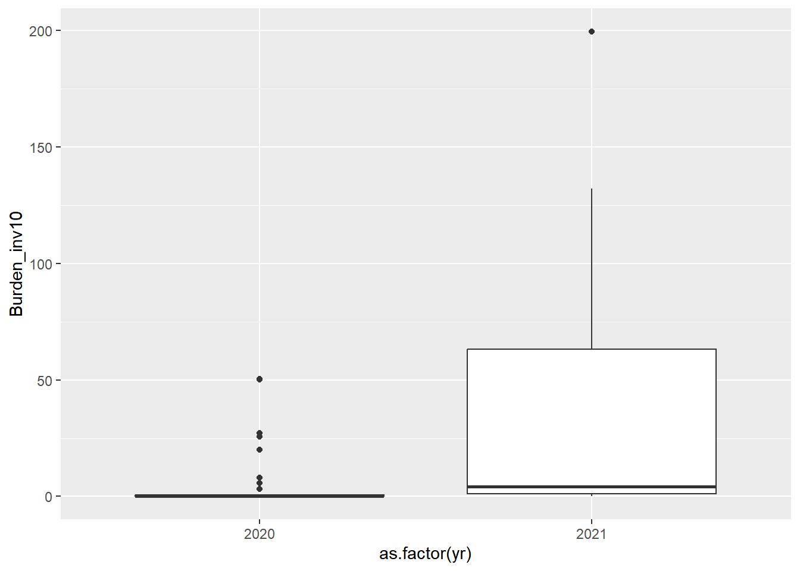
Plotting total Burden outcomes across all sampling periods.
stork_AMR_clean %>%
ggplot(aes(as.factor(samp), Burden_inv10))+
geom_boxplot()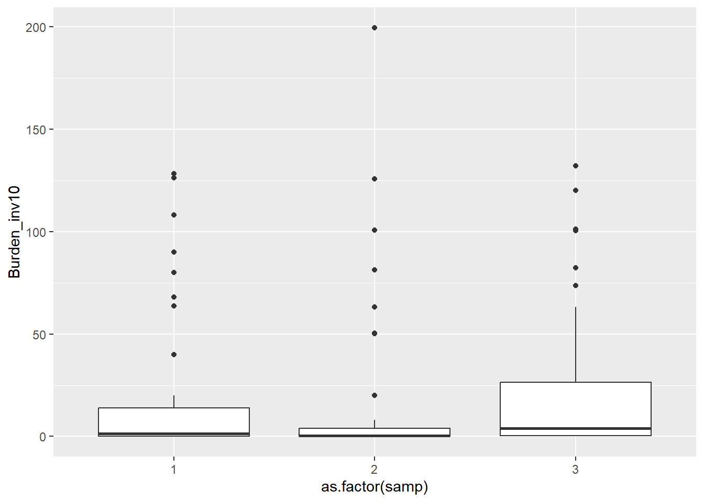
pBurden <- stork_AMR_clean %>%
ggplot(aes(as.factor(samp), Burden_inv10)) +
geom_boxplot() +
geom_jitter(width = 0.2, alpha = 0.5) + # Add jittered points with slight transparency
ylab('Total Resistance Gene Burden (Inverse Log10)') +
xlab('') +
scale_x_discrete(labels = c("1" = "Sampling Period 1", "2" = "Sampling Period Period 2", "3" = "Sampling Period 3"))
# Display the plot
pBurden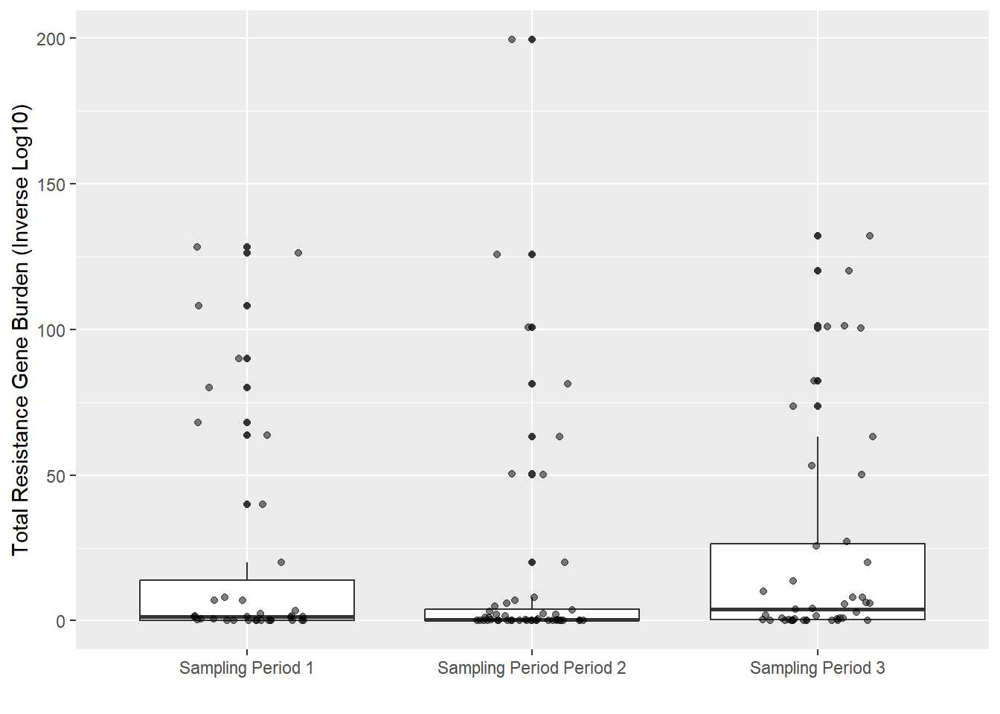
# Save the plot as TIFF using ggsave
ggsave(filename = here('4 Results', 'Figures', 'Burden_Sample.tiff'),
plot = pBurden, device = "tiff", width = 10, height = 6, dpi = 300)Sampling period and MDR
summary_stats <- stork_AMR_clean %>%
group_by(samp) %>%
summarise(
mean_MDR = mean(MDR), # Proportion of MDR = 1
se_MDR = sqrt(mean_MDR * (1 - mean_MDR) / n()) # Standard error of the proportion
)
# Plot with box plot and error bars
pMDR <- stork_AMR_clean %>%
ggplot(aes(x = as.factor(samp), y = MDR)) +
geom_boxplot(alpha = 0.6, outlier.shape = NA) + # Single box plot per samp
geom_jitter(position = position_jitter(width = 0.2, height = 0),
alpha = 0.5, color = "black") + # Add raw data points
geom_errorbar(data = summary_stats, # Error bars on top
aes(x = as.factor(samp),
ymin = mean_MDR - se_MDR,
ymax = mean_MDR + se_MDR),
width = 0.2, color = "black", size = 0.8, inherit.aes = FALSE) +
geom_point(data = summary_stats, # Mean points on top
aes(x = as.factor(samp), y = mean_MDR),
color = "black", size = 3, shape = 21, fill = "white", inherit.aes = FALSE) +
ylab('Multi-Drug Resistance') +
xlab('') +
scale_x_discrete(labels = c("1" = "Sampling Period 1",
"2" = "Sampling Period 2",
"3" = "Sampling Period 3")) Warning: Using `size` aesthetic for lines was deprecated in ggplot2 3.4.0.
ℹ Please use `linewidth` instead.# Display the plot
pMDR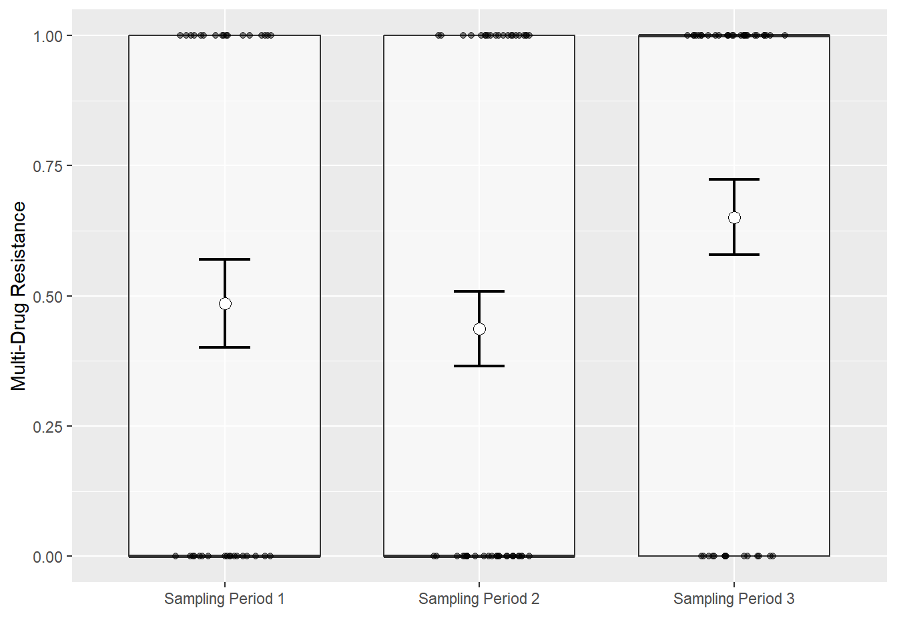
# Save the plot as TIFF using ggsave
ggsave(filename = here('4 Results', 'Figures', 'MDR_Sample.tiff'),
plot = pMDR, device = "tiff", width = 10, height = 6, dpi = 300)Total Number of AMR Gene Classes over both years.
pSB <- stork_AMR_clean %>%
ggplot(aes(as.factor(yr), sum))+
geom_boxplot() +
ylab('Breeding Season Sampling Period') +
xlab ('Antimicrobial Gene Resistance Burden')
# Save the plot as TIFF using ggsave
ggsave(filename = here('4 Results', 'Figures', 'Prelim_BurdenvsSamp.tiff'),
plot = pSB, device = "tiff", width = 10, height = 6, dpi = 300)Sample vs Total Number of AMR Gene Classes
stork_AMR_clean %>%
ggplot(aes(as.factor(samp), sum))+
geom_boxplot()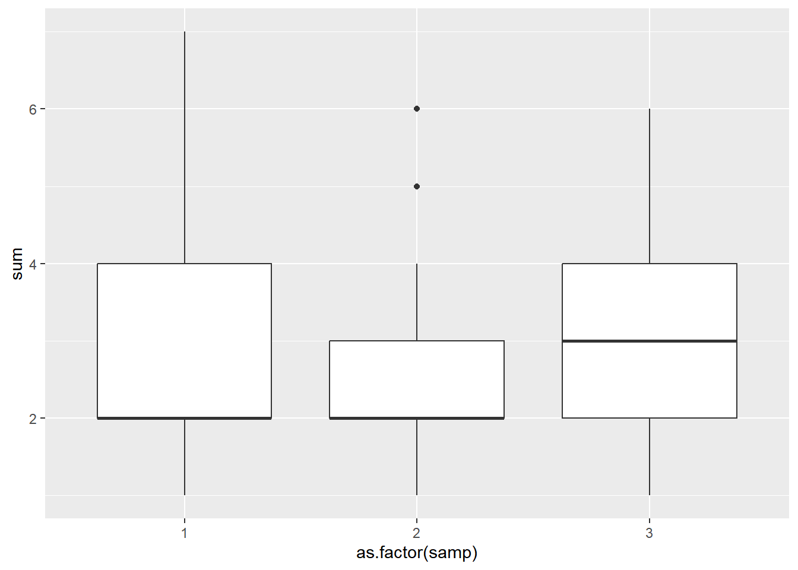
Plot Gene Burden vs age of bird
stork_AMR_clean %>%
ggplot(aes(age, Burden_Log10))+
geom_point()Warning: Removed 30 rows containing missing values or values outside the scale range
(`geom_point()`).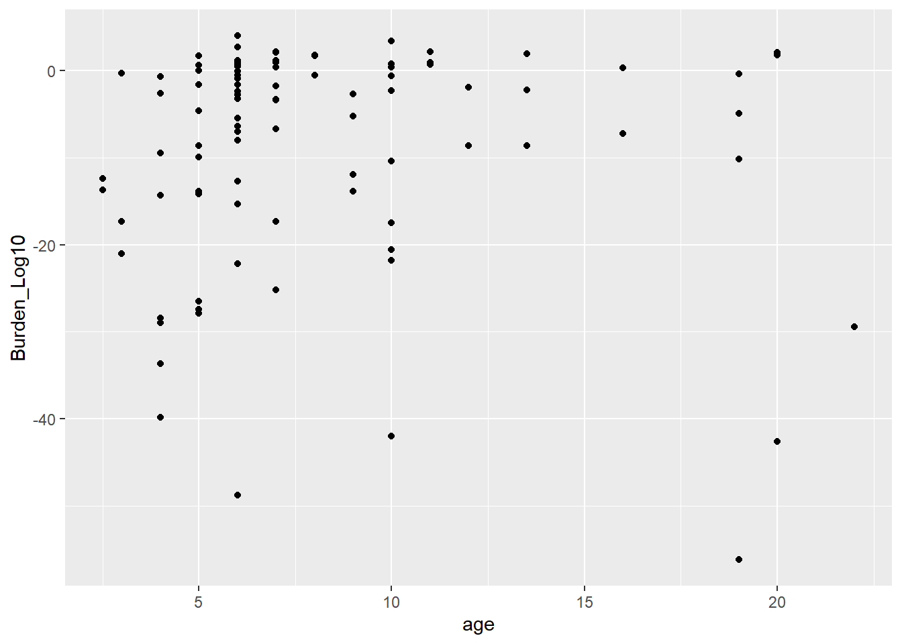
Plot MDR vs age of bird
stork_AMR_clean %>%
ggplot(aes(as.factor(MDR), age))+
geom_boxplot()Warning: Removed 30 rows containing non-finite outside the scale range
(`stat_boxplot()`).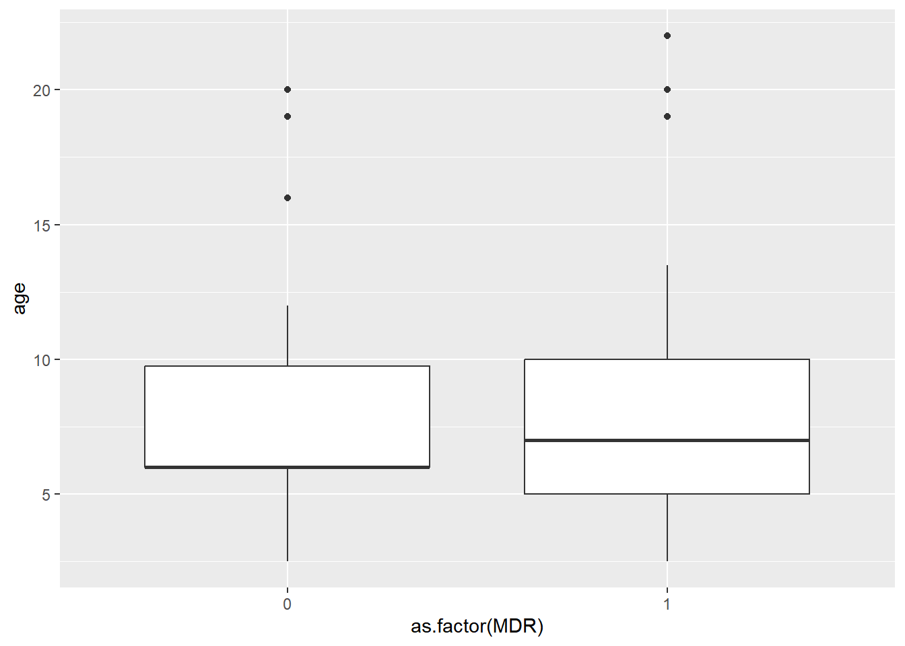
Plot Gene Burden vs age of bird
stork_AMR_clean %>%
ggplot(aes(nsuccess, Burden_Log10))+
geom_point()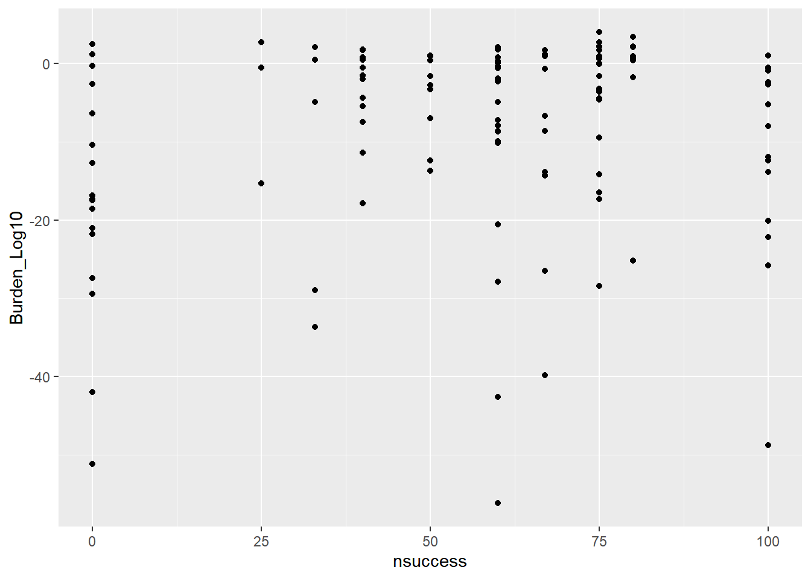
Plot MDR vs nest success
stork_AMR_clean %>%
ggplot(aes(as.factor(MDR), nsuccess))+
geom_boxplot()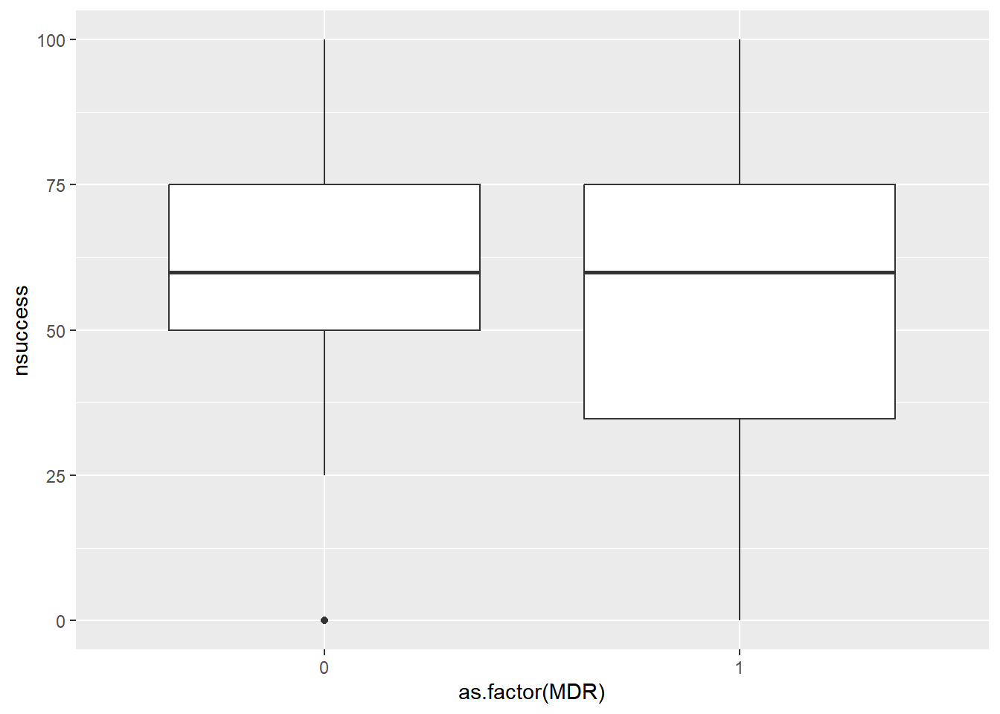
Now we will make a table filtering out 2020.
table2 <- stork_AMR_2021 %>%
select(id, age, nsuccess, mean_lui, Burden_Log10, MDR) %>%
knitr::kable()
table2| id | age | nsuccess | mean_lui | Burden_Log10 | MDR |
|---|---|---|---|---|---|
| 213 | 11.0 | 80 | 0.0555560 | 0.9 | 0 |
| 267 | NA | 100 | 0.0000000 | -20.1 | 1 |
| 215 | 4.0 | 33 | 0.0000000 | -29.0 | 1 |
| 269 | 6.0 | 25 | 0.2777780 | -0.5 | 0 |
| 203 | NA | 0 | NA | -18.6 | 1 |
| 207 | 10.0 | 60 | 0.2777778 | 0.8 | 0 |
| 265 | 13.5 | 60 | 0.0833333 | -2.2 | 1 |
| 275 | NA | 40 | NA | -2.0 | 1 |
| 285 | NA | 60 | NA | 0.1 | 0 |
| 219 | 4.0 | 75 | 0.0000000 | -9.5 | 1 |
| 235 | 5.0 | 75 | 0.1111111 | -1.6 | 0 |
| 257 | 6.0 | 50 | 0.1944444 | -1.6 | 0 |
| 217 | 6.0 | 40 | 0.2222220 | -5.5 | 1 |
| 259 | 8.0 | 40 | 0.1666670 | 1.8 | 0 |
| 237 | NA | 33 | 0.0000000 | 0.5 | 1 |
| 261 | 20.0 | 60 | 0.1666670 | 2.1 | 0 |
| 211 | 6.0 | 75 | 0.1666667 | -3.2 | 0 |
| 263 | 10.0 | 80 | 0.2777780 | 0.4 | 0 |
| 279 | 7.0 | 50 | 0.1111111 | -3.3 | 0 |
| 227 | NA | 75 | NA | 0.7 | 0 |
| 231 | 22.0 | 0 | 0.0555556 | -29.4 | 1 |
| 275b | NA | 40 | NA | 0.8 | 1 |
| 243 | 7.0 | 67 | 0.0555560 | 0.9 | 1 |
| 223 | NA | 75 | NA | 2.7 | 1 |
| 245 | 7.0 | 75 | 0.0555560 | -17.3 | 1 |
| 221 | NA | 75 | NA | 1.7 | 0 |
| 249 | 4.0 | 67 | 0.0555560 | -0.7 | 0 |
| 301 | 7.0 | 67 | 0.0555556 | -6.7 | 1 |
| 303 | 6.0 | 40 | 0.2222220 | 0.5 | 0 |
| 305 | 5.0 | 75 | 0.1111111 | 0.0 | 0 |
| 343 | 20.0 | 60 | 0.1666670 | -42.6 | 1 |
| 317 | NA | 100 | 0.0000000 | 1.0 | 0 |
| 313 | 13.5 | 60 | 0.0833333 | 1.9 | 1 |
| 319 | 7.0 | 50 | 0.1111111 | 0.4 | 0 |
| 233 | NA | 0 | NA | 2.5 | 0 |
| 205 | 7.0 | 80 | 0.4444440 | -1.8 | 0 |
| 299 | 6.0 | 75 | 0.1666667 | -0.1 | 1 |
| 297 | 11.0 | 80 | 0.0555556 | 0.7 | 0 |
| 295 | NA | 33 | 0.0000000 | -4.9 | 1 |
| 291 | 10.0 | 60 | 0.2777778 | -0.6 | 0 |
| 357 | 6.0 | 25 | 0.2777780 | -15.3 | 1 |
| 355 | 8.0 | 40 | 0.1666670 | -0.5 | 0 |
| 351 | NA | 75 | NA | -17.3 | 1 |
| 337 | NA | 75 | NA | 0.9 | 0 |
| 333 | 4.0 | 67 | 0.0555560 | -14.3 | 1 |
| 329 | NA | 75 | NA | -3.6 | 1 |
| 345 | NA | 60 | NA | -8.7 | 1 |
| 309 | 7.0 | 75 | 0.0555560 | -3.4 | 0 |
| 289 | 7.0 | 80 | 0.4444440 | 2.1 | 0 |
| 910 | 10.0 | 80 | 0.2777780 | 3.4 | 1 |
| 236 | 8.0 | 40 | 0.1666670 | 1.7 | 1 |
| 300 | 5.0 | 75 | 0.1111111 | -4.6 | 0 |
| 802 | NA | 75 | NA | 1.7 | 0 |
| 952 | NA | 33 | 0.0000000 | 2.1 | 0 |
| 1901 | 4.0 | 67 | 0.0555560 | -39.8 | 1 |
| 35 | 6.0 | 75 | 0.1666667 | 4.0 | 1 |
| 34 | 11.0 | 80 | 0.0555560 | 2.2 | 0 |
| 1907 | 6.0 | 50 | 0.1944444 | 1.0 | 0 |
| 143 | 4.0 | 75 | 0.0000000 | -28.4 | 1 |
| 157 | 10.0 | 60 | 0.2777778 | -20.6 | 1 |
| 301 | 7.0 | 80 | 0.4444440 | -25.2 | 1 |
| 109 | 6.0 | 40 | 0.2222220 | 0.8 | 0 |
| 234 | 7.0 | 75 | 0.0555560 | 2.2 | 1 |
| 240 | NA | 40 | NA | -1.5 | 1 |
| 2018 | NA | 75 | NA | -16.5 | 1 |
| 901 | 20.0 | 60 | 0.1666670 | 1.8 | 0 |
| A02 | NA | 60 | NA | -7.9 | 1 |
| 1908 | 13.5 | 60 | 0.0833333 | -8.6 | 1 |
| 911 | 6.0 | 25 | 0.2777780 | 2.7 | 1 |
| 12 | NA | 100 | 0.0000000 | -25.8 | 1 |
| 10 | 7.0 | 50 | 0.1111111 | 0.9 | 0 |
| 305 | NA | 75 | NA | -4.5 | 1 |
| 304 | 7.0 | 67 | 0.0555556 | 1.2 | 1 |
Plotting mean landfill use index vs nest success
stork_AMR_2021 %>%
ggplot(aes(mean_lui, nsuccess))+
geom_point()+
geom_smooth(method = "lm")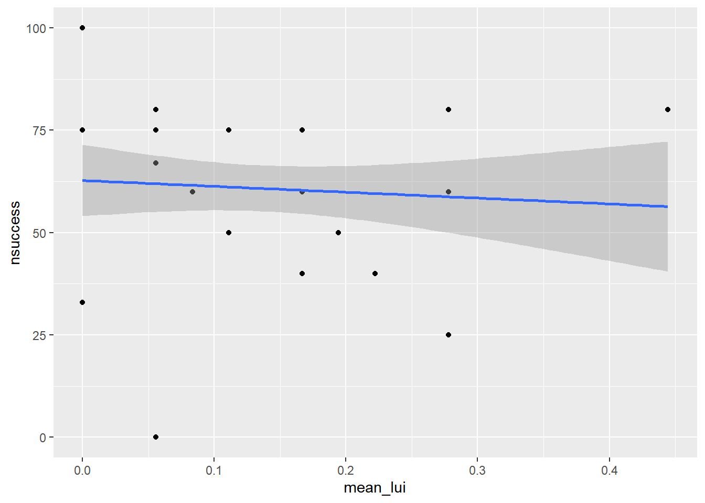
Plotting mean landfill use index vs nest success, grouped by MDR outcome.
pLN <- stork_AMR_clean%>%
ggplot(aes(mean_lui, nsuccess, color=as.factor(MDR)))+
geom_point()+
geom_smooth(method = "lm")+
ylab('Nest Success %') +
xlab ('Landfill Use') +
scale_x_continuous(breaks = c(0, 0.1, 0.2, 0.3, 0.4), # Define specific x-axis breaks
labels = c("None (0)", "Mild (0.1)", "Moderate (0.2)", "High (0.3)", "Very High (0.4)")) +
scale_color_manual(name = "Multi-Drug Resistance",
labels = c("0" = "Absent", "1" = "Present"), # Custom labels for the legend
values = c("0" = "darkred", "1" = "forestgreen")) # Custom colors for each level
pLN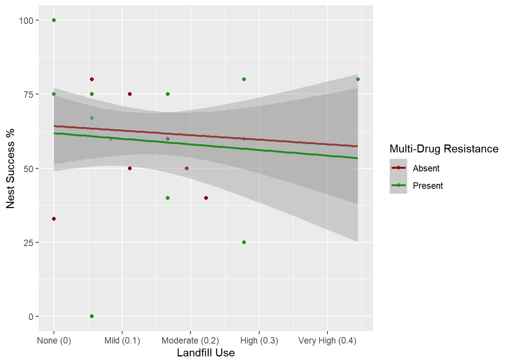
# Save the plot as a TIFF file
ggsave(filename = here("4 Results", "Figures", "RAWluiVSns.tiff"),
plot = pLN,
device = "tiff",
width = 10,
height = 6,
dpi = 300)Plotting mean landfill use index vs nest success, grouped by MDR outcome.
stork_AMR_2021%>%
ggplot(aes(mean_lui, nsuccess, color=Burden_inv10))+
geom_point()+
geom_smooth(method = "lm")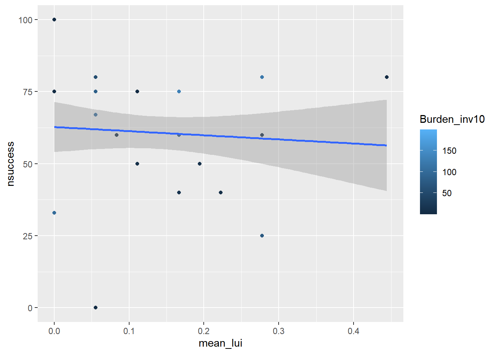
Plotting MDR vs mean landfill use index
pLM <- stork_AMR_2021 %>%
ggplot(aes(as.factor(MDR), mean_lui))+
geom_boxplot()+
geom_jitter(width = 0.2, alpha = 0.5) + # Add jittered points with transparency
ylab('Landfill Use') +
xlab ('Multi-Drug Resistance')+
scale_x_discrete(labels = c("0" = "Absent", "1" = "Present")) + # Map 0 to "No" and 1 to "Yes"
scale_y_continuous(breaks = c(0, 0.1, 0.2, 0.3, 0.4), # Define specific y-axis breaks
labels = c("None (0)", "Mild (0.1)", "Moderate (0.2)", "High (0.3)", "Very High (0.4)")) # Custom labels for y-axis
pLM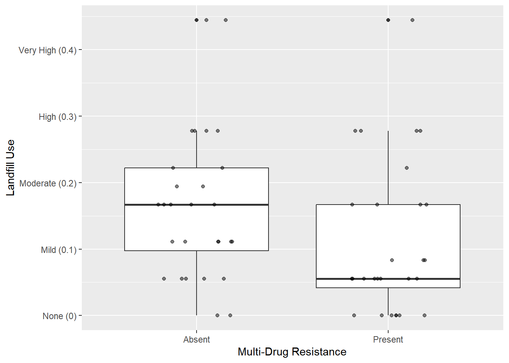
#save as tiff
tiff(file = here('4 Results', 'Figures', 'Prelim_LUIvsMD.tiff'))
pLM
dev.off() png
2 Plotting Burden vs mean landfill use index
stork_AMR_2021 %>%
ggplot(aes(mean_lui, Burden_Log10))+
geom_point()+
geom_smooth(method = "lm")`geom_smooth()` using formula = 'y ~ x'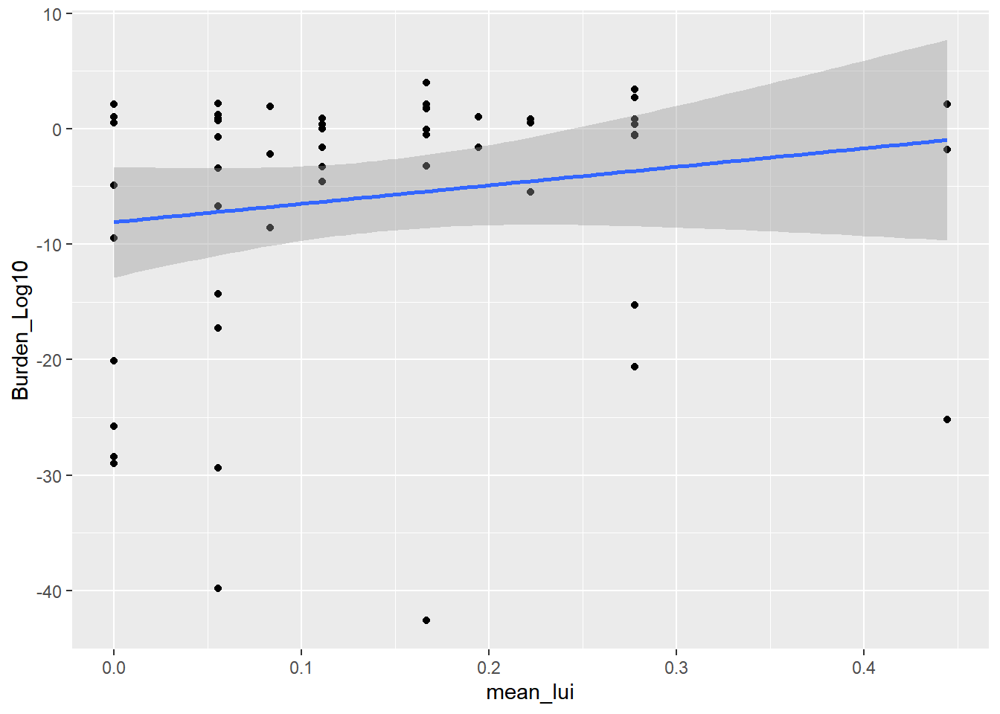
There seems to be a slight decrease in the presence of MDR and increase in the burden of AMR genes as landfill use index increases. Otherwise, there are not many apparent trends in the data off the bat. This exploration will help us as we move forward into a more robust statistical analysis.
Lets go back and just visulaize raw data. Gene Heat Map Log10 tranform data first
# Define gene columns for log transformation
gene_columns <- c("TET..A", "TET..B", "TET..Y", "TET..K", "TET..M",
"TET..Q", "TET..S", "TET..W", "sulI", "sulII", "str",
"aadA", "catI", "catII", "ermB", "ermF", "mecA", "mcr.1",
"qnrB", "blaTEM", "qnrS")
# Convert data to long format using the specified gene columns
data_long <- stork_AMR_clean %>%
pivot_longer(
cols = all_of(gene_columns),
names_to = "Gene",
values_to = "Abundance"
)
# Separate data by year
data_2020 <- data_long %>% filter(yr == 2020)
data_2021 <- data_long %>% filter(yr == 2021)
create_and_save_heatmap <- function(data, year, filepath) {
heatmap <- ggplot(data, aes(x = nes, y = Gene, fill = Abundance)) +
geom_tile(na.rm = FALSE) + # Ensures NA values are kept
facet_wrap(~samp, scales = "free", nrow = 1) +
labs(title = paste("Gene Abundance across Sampling Periods for", year),
x = "Nest ID", y = "Resistance Gene") +
# Use a two-color gradient with NA values as white
scale_fill_gradient(
low = "dodgerblue2",
high = "red",
na.value = "white", # Set NA values to white
name = "Abundance"
) +
theme_minimal() +
scale_x_discrete(guide = guide_axis(n.dodge = 2)) +
theme(axis.text.x = element_text(angle = 90, vjust = 0.5, hjust = 1, size = 8))
# Save the plot as a TIFF file
ggsave(filename = filepath, plot = heatmap, device = "tiff", width = 10, height = 6, dpi = 300)
}
# Save heatmaps for each year
create_and_save_heatmap(data_2020, "2020", here('4 Results', 'Figures', 'Prelim_LUIvsMD_2020.tiff'))
create_and_save_heatmap(data_2021, "2021", here('4 Results', 'Figures', 'Prelim_LUIvsMD_2021.tiff'))Lets just quickly review normality of the Burden Variables/Distribution
Must use GLMM for both
# Subset relevant variables
burden_data <- stork_AMR_clean %>% select(Burden_Log10, Burden_inv10)
# Perform Shapiro-Wilk test for normality
shapiro_log10 <- shapiro.test(burden_data$Burden_Log10)
shapiro_inv10 <- shapiro.test(burden_data$Burden_inv10)
# Perform Kolmogorov-Smirnov test for normality
ks_log10 <- ks.test(burden_data$Burden_Log10, "pnorm", mean(burden_data$Burden_Log10, na.rm=TRUE), sd(burden_data$Burden_Log10, na.rm=TRUE))Warning in ks.test.default(burden_data$Burden_Log10, "pnorm",
mean(burden_data$Burden_Log10, : ties should not be present for the
Kolmogorov-Smirnov testks_inv10 <- ks.test(burden_data$Burden_inv10, "pnorm", mean(burden_data$Burden_inv10, na.rm=TRUE), sd(burden_data$Burden_inv10, na.rm=TRUE))Warning in ks.test.default(burden_data$Burden_inv10, "pnorm",
mean(burden_data$Burden_inv10, : ties should not be present for the
Kolmogorov-Smirnov test# Print test results
cat("Shapiro-Wilk Test Results:\n")Shapiro-Wilk Test Results:print(shapiro_log10)
Shapiro-Wilk normality test
data: burden_data$Burden_Log10
W = 0.80712, p-value = 1.425e-11print(shapiro_inv10)
Shapiro-Wilk normality test
data: burden_data$Burden_inv10
W = 0.58823, p-value < 2.2e-16cat("\nKolmogorov-Smirnov Test Results:\n")
Kolmogorov-Smirnov Test Results:print(ks_log10)
Asymptotic one-sample Kolmogorov-Smirnov test
data: burden_data$Burden_Log10
D = 0.16959, p-value = 0.001423
alternative hypothesis: two-sidedprint(ks_inv10)
Asymptotic one-sample Kolmogorov-Smirnov test
data: burden_data$Burden_inv10
D = 0.36851, p-value = 2.776e-15
alternative hypothesis: two-sided# Generate histograms for visualization
p1 <- ggplot(stork_AMR_clean, aes(x = Burden_Log10)) +
geom_histogram(aes(y = ..density..), bins = 30, fill = "blue", alpha = 0.5) +
geom_density(color = "red", size = 1) +
ggtitle("Histogram and Density Plot: Burden_Log10") +
theme_minimal()
p2 <- ggplot(stork_AMR_clean, aes(x = Burden_inv10)) +
geom_histogram(aes(y = ..density..), bins = 30, fill = "blue", alpha = 0.5) +
geom_density(color = "red", size = 1) +
ggtitle("Histogram and Density Plot: Burden_inv10") +
theme_minimal()
# Generate Q-Q plots for normality assessment
p3 <- ggplot(stork_AMR_clean, aes(sample = Burden_Log10)) +
stat_qq() +
stat_qq_line() +
ggtitle("Q-Q Plot: Burden_Log10") +
theme_minimal()
p4 <- ggplot(stork_AMR_clean, aes(sample = Burden_inv10)) +
stat_qq() +
stat_qq_line() +
ggtitle("Q-Q Plot: Burden_inv10") +
theme_minimal()
# Display the plots
print(p1)Warning: The dot-dot notation (`..density..`) was deprecated in ggplot2 3.4.0.
ℹ Please use `after_stat(density)` instead.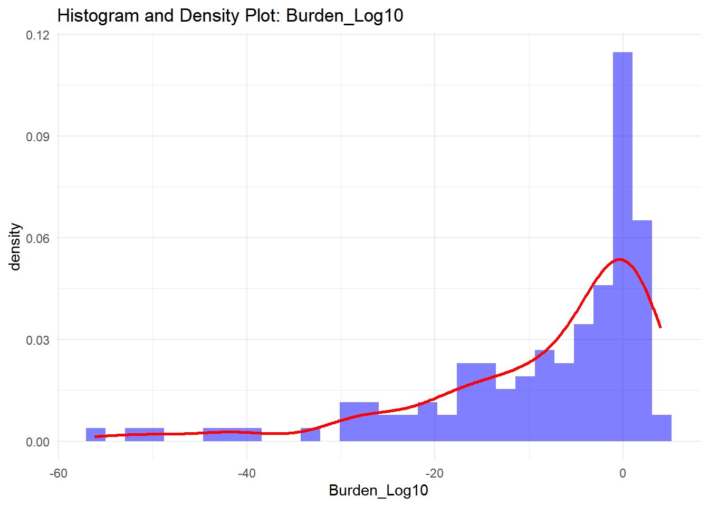
print(p2)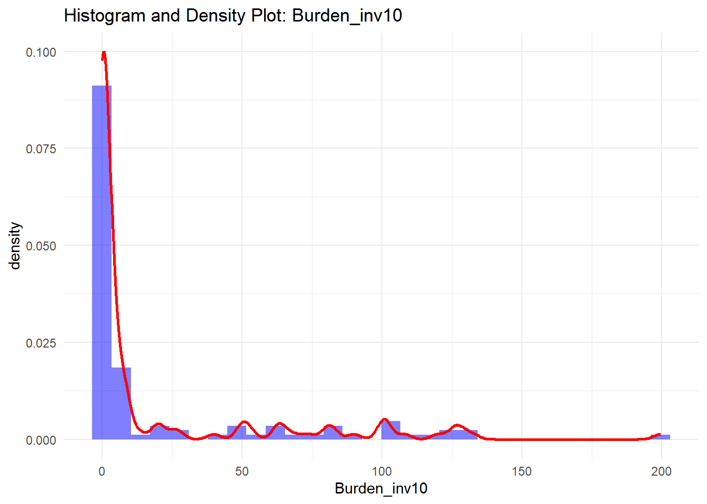
print(p3)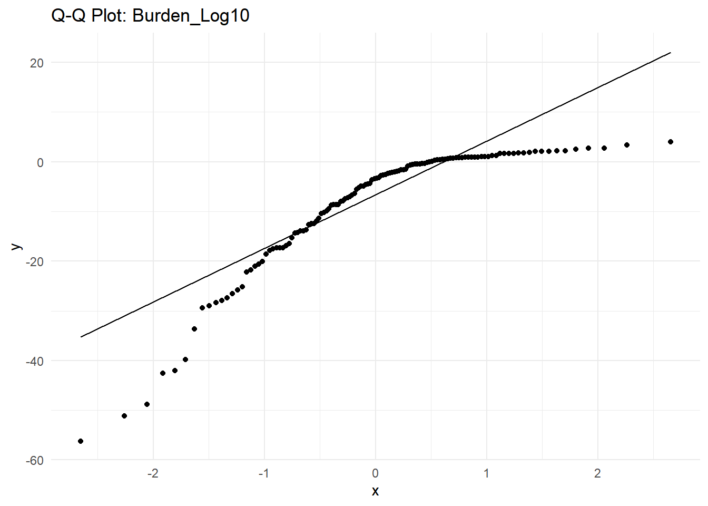
print(p4)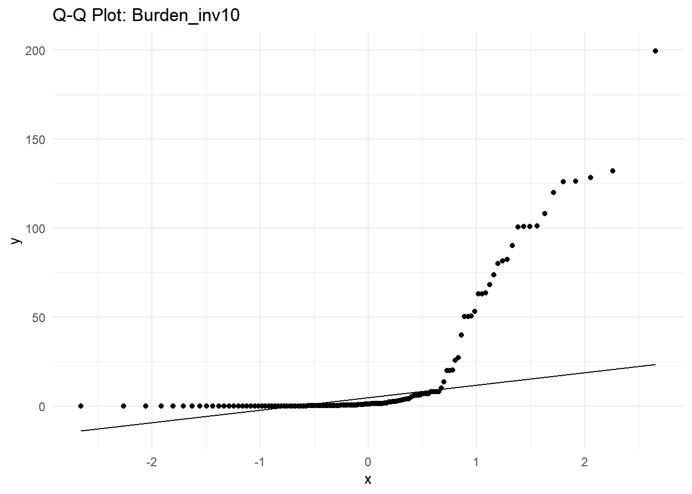